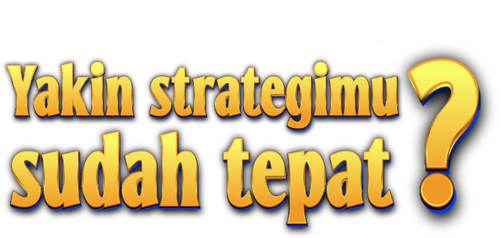

Every Moves Reflects A Different Strategy
Make Your First Move

Seperti bidak catur, setiap investor juga punya gaya investasinya masing-masing.
1 / 7
Ada investasi baru yang katanya cuan besar. Reaksimu?
Kalau di akhir bulan masih ada sisa uang. Apa yang biasanya kamu lakukan?
Ketika kondisi pasar sedang dinamis. Gimana caramu menentukan instrumen investasi?
Media sosial lagi ramai bahas tren investasi. Bagaimana kamu menyikapinya?
Sesuai dengan strategi kamu, mana waktu yang paling ideal untuk memanen hasil investasi?
Pasar lagi merah dan nilai asetmu turun 10%. Langkah apa yang kamu ambil?
Barang wishlist-mu lagi diskon, tapi besok harganya balik normal. Apa yang kamu lakukan?
Pilih saja sesuai gaya investasimu. Tak ada benar atau salah, kok!
✨ Hasil Kepribadian
R
👉 Swipe kanan untuk info lengkap